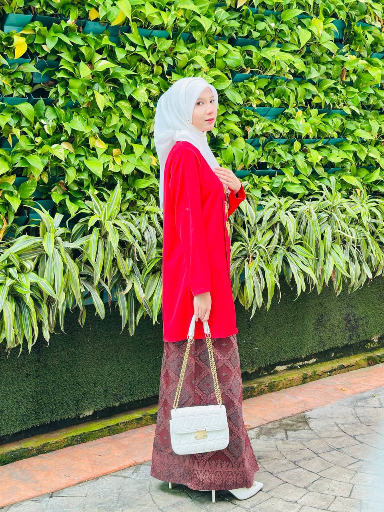
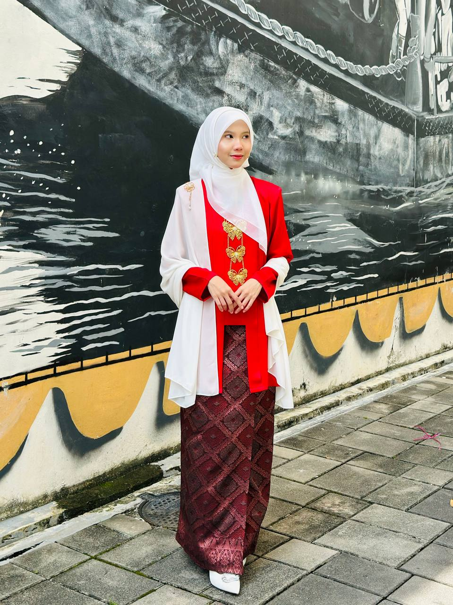
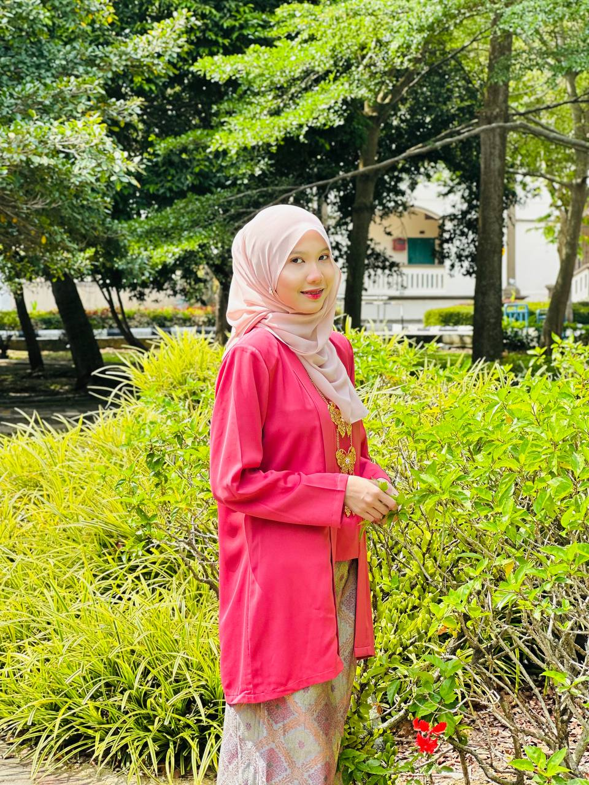

Crafting digital experiences with modern editorial elegance.
Portrait · Edition '26
Nur Dania Sofea
Melaka & Johor, MY
Currently
Junior Web Developer
Year 3 ICT undergraduate at FTMK, Universiti Teknikal Malaysia Melaka (UTeM) combining real-world web engineering across 67 international journal sites with a freelance clothing model, content creator producing restaurant promotional videos (including Handi Roti), and Canon PowerShot G7 X Mark III photographer's instinct for visual storytelling and human-centered interfaces.
67+
Academic Journal Websites Managed
Zibeline International Publishing · Full-time & Remote
FTMK, UTeM Degree
UTeM Dean's List (2 Sems)
POLIMAS Diploma
CGPA 3.82 (Dean's Award Every Sem)
Bridging clean full-stack architecture, data analytics, apparel modeling, restaurant promo reels, and Canon PowerShot G7 X Mark III photography.
Lookbook & Reels
Browse apparel modeling lookbooks, Handi Roti promo video reels, and Canon G7 X Mark III photography.
Selected Works
Signature Case Studies
02 — About & Qualities
Where disciplined software craft meets editorial aesthetics.
I am Nur Dania Sofea binti Amdan, a Year 3 Bachelor of Information & Communication Technology undergraduate at FTMK, Universiti Teknikal Malaysia Melaka (UTeM), where I have consistently earned the UTeM Dean's List Award across 2 semesters. Before entering my degree, I graduated with a Diploma in Information Technology (Digital Technology) from Politeknik Sultan Abdul Halim Mu'adzam Shah (POLIMAS) with a 3.82 CGPA, receiving both the Anugerah Pelajar Cemerlang and the Dean's Award every single semester.
Beyond the lecture hall, I gained hands-on industry experience as a Junior Web Developer at Zibeline International Publishing—managing and maintaining 67 academic journal websites full-time in Cyberjaya before continuing remotely part-time alongside my degree. Earlier, I interned as a Web Developer at Rekasawang Sdn. Bhd., building responsive WordPress & Elementor client portals (Klinik Akhi, PACU, UNIPSAS APEL, Pemikir, JejakVacation), configuring WooCommerce & toyyibPay/EasyParcel stores (NuuhaBeauty, SuperKidzz), and developing a Laravel & MySQL app (LaraGigs).
In parallel with technology, I work as a freelance clothing model, content creator, and Canon PowerShot G7 X Mark III photographer—collaborating with local boutiques on baju kurung and modest wear campaigns as well as producing promotional food and restaurant videos for F&B brands such as Handi Roti. That creative background directly sharpens my eye for hierarchy, pacing, and storytelling in UI/UX design.
-
Junior Web Developer
Zibeline Int. Publishing · 67 Journal Sites
-
Bachelor of ICT (FTMK, UTeM)
Year 3 Undergraduate · Dean's List (2 Sems)
-
Diploma in IT (POLIMAS)
CGPA 3.82 · Ex-Intern, Rekasawang Sdn. Bhd.
-
Model, Photographer & Content Creator
Apparel Shoots, Handi Roti Promo Reels & Canon G7 X
Personal Qualities
Four Pillars of How I Work
Structured Problem Solver
Breaks down complex systems—from 67-site WordPress operations to distributed Java sockets and IoT security—into clean, verifiable steps.
Detail-Oriented Craft
Unites HCI design principles with editorial photography and video framing so every layout grid, pacing beat, and micro-interaction feels intentional.
Collaborative Coordinator
Coordinates deliverables seamlessly across remote publishing teams, university project squads, F&B owners, stylists, and fashion boutique clients.
Creative Adaptability
Shifts effortlessly between backend coding, Power BI forecasting, apparel modeling, restaurant promo video creation, and Canon photography while keeping Dean's List standards.
Skillset
Technical & Creative Capabilities
Web & UI/UX
01Software, AI & Data
02Creative & Media
03Distinctions
Awards & Certifications
UTeM Dean's List (2 Semesters)
FTMK, Universiti Teknikal Malaysia Melaka
Recognized on the Faculty Dean's List for sustained high academic standing across undergraduate ICT studies.
Academic Excellence Award
Anugerah Pelajar Cemerlang · POLIMAS
Awarded for outstanding overall academic excellence throughout the Diploma in Information Technology programme.
Dean's Award — Every Semester
Anugerah Ketua Jabatan · POLIMAS
Maintained Dean's Award recognition from the Department of ICT in every semester of Diploma study.
iCompEx 2023 & PEPCI 2023
Social Media Committee & Entrepreneurial Pitching
Managed exhibition social content for iCompEx 2023 and pitched an entrepreneurial business concept at PEPCI 2023.
03 — Experience & Education
Career Milestones & Academic Journey
Work & Freelance Experience
Junior Web Developer
Zibeline International Publishing
Managed publishing web updates, structured academic content formatting, and maintained digital publishing consistency remotely alongside Year 3 degree coursework.
Junior Web Developer
Zibeline International Publishing
Managed and maintained 67 academic journal websites under the company's publishing platform; designed and updated WordPress sites, formatted academic publications, and optimized site performance.
Clothing Model, Photographer & Content Creator
Fashion Modeling, Restaurant Promo Videos & Canon Photography
Modeled apparel for fashion photoshoots (baju kurung, modest, and contemporary wear), captured editorial OOTD and natural-light photography using a Canon PowerShot G7 X Mark III, and produced engaging promotional video reels for F&B and restaurant brands including Handi Roti.
Web Developer Intern
Rekasawang Sdn. Bhd.
Built and refined responsive client websites including klinikakhi.com.my, pacuummah.com, promosi.unipsas.edu.my, pemikir.sawang.dev, and jejakvacation.sawang.dev from Figma layouts; configured WooCommerce weight-based shipping (nuuhabeauty.com) and toyyibPay / EasyParcel integration (superkidzz.com.my); built a Laravel & MySQL job/gig web app (LaraGigs); and conducted UAT, QC with designers, bilingual translations, and client speed/SEO reports.
Academic History
Bachelor of Information & Communication Technology
Universiti Teknikal Malaysia Melaka (UTeM), FTMK
Core focus in UI/UX & Human-Computer Interaction, Distributed Systems, Databases, Software Project Management, Artificial Intelligence, and Business Intelligence.
Diploma in Information Technology (Digital Technology)
Politeknik Sultan Abdul Halim Mu'adzam Shah (POLIMAS)
Graduated with Anugerah Pelajar Cemerlang and Dean's Award Every Semester. Final Year Project: SanctGuard — IoT-Based Smart Donation Box Security System.
Malaysian Certificate of Education (SPM)
SMK Tun Perak, Muar, Johor
04 — Work Produced
Curated Technical & UI/UX Projects
Select a discipline below or open any card to inspect the full HCI design breakdown and interactive mockup preview.
06 — Creative Lookbook
Modeling, Canon Stills & Video Reels
A curated visual archive showcasing baju kurung and modest fashion modeling, editorial stills captured on a Canon PowerShot G7 X Mark III, and promotional restaurant video reels including Handi Roti. Select any look or reel below to open the full-screen viewer.

Look 02Model Series

Look 01Featured

Look 03Model Series
07 — Contact
Let's create something memorable together.
Available for 2027 ICT internships, web & UI/UX development, boutique apparel modeling, and Canon PowerShot G7 X Mark III photography sessions.
Thank you!
Your note, , regarding has been received. I'll respond shortly.